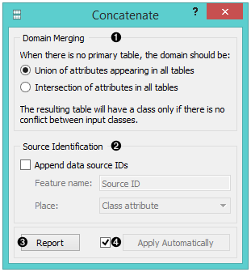
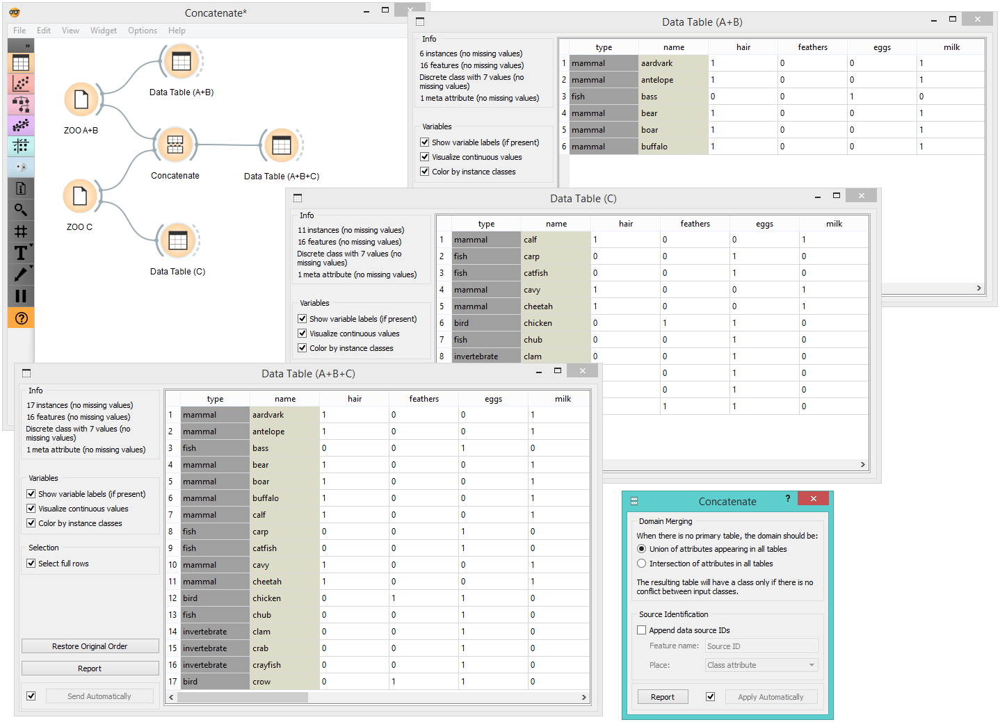

Concatenate
Concatenates data from multiple sources.
Inputs
- Primary Data: data set that defines the attribute set
- Additional Data: additional data set
Outputs
- Data: concatenated data
The widget concatenates multiple sets of instances (data sets). The merge is “vertical”, in a sense that two sets of 10 and 5 instances yield a new set of 15 instances.

- Set the attribute merging method.
- Add the identification of source data sets to the output data set.
- Produce a report.
- If Apply automatically is ticked, changes are communicated automatically. Otherwise, click Apply.
If one of the tables is connected to the widget as the primary table, the resulting table will contain its own attributes. If there is no primary table, the attributes can be either a union of all attributes that appear in the tables specified as Additional Tables, or their intersection, that is, a list of attributes common to all the connected tables.
Example
As shown below, the widget can be used for merging data from two separate files. Let’s say we have two data sets with the same attributes, one containing instances from the first experiment and the other instances from the second experiment and we wish to join the two data tables together. We use the Concatenate widget to merge the data sets by attributes (appending new rows under existing attributes).
Below, we used a modified Zoo data set. In the first File widget, we loaded only the animals beginning with the letters A and B and in the second one only the animals beginning with the letter C. Upon concatenation, we observe the new data in the Data Table widget, where we see the complete table with animals from A to C.
